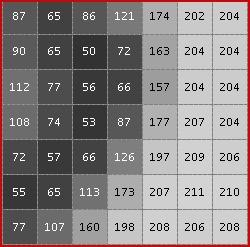
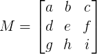
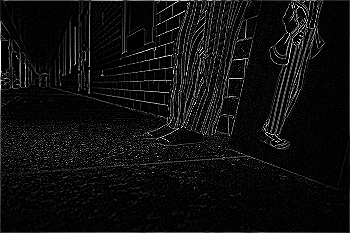
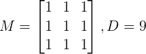
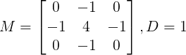

Instituto de Computação da UNICAMP
Disciplina MC102: Algoritmos e Programação de Computadores - Turmas QRST
Laboratório Nº 18
Laboratório 18 - Convolução
Prazo de entrega: 19/06/2018 23:59:59
Peso: 2
Professor: Eduardo C. Xavier
Monitor: Alexsandro Alexandrino
Monitor: Ramon Nepomuceno
Descrição
Programas de edição e processamento de imagens, como Gimp e Adobe Photoshop, possuem diversos filtros que são utilizados para se manipular imagens, tais como Blur, Sharpen, Edge detection, Emboss, etc. Muitos desses efeitos são realizados através de somente uma operação chamada de convolução de matrizes.
Uma imagem digital nada mais é do que a projeção de uma matriz, que representa a imagem, na tela do computador. Cada posição da matriz possui um valor que indica a intensidade e cor que deve ser projetada na posição correspondente da imagem na tela do computador. Cada uma dessas posições é denominada de pixel (picture element). Nessa matriz, cada pixel (x,y) tem um certo valor p(x,y). Em imagens de tons de cinza PGM (Portable Graymap Format) esse valor descreve a intensidade do ponto projetado, que varia do preto (valor 0) ao branco (valor 255). As coordenadas da matriz seguem a ordem raster (de cima para baixo, da esquerda para direita). A Figura 1 apresenta um exemplo que caracteriza essa forma de representação de imagens.
|  | |
|---|---|
| (a) Imagem no formato PGM, em níveis de cinza, com uma pequena região destacada. | (b) Zoom na região em destaque. Cada valor representa a intensidade de um pixel. |
Figura 1: Visualização de uma pequena região da imagem de Lena.
Neste laboratório você deverá implementar um programa que realiza a operação de convolução de imagens.
A operação de convolução recebe como parâmetros uma matriz (com m colunas por n linhas) correspondente a imagem a ser processada, uma matriz "núcleo" M e um divisor inteiro D, e deve gerar como resposta uma nova imagem com as mesmas dimensões da imagem original só que com novos valores para cada pixel.
Considere a matriz  e o divisor D. Para cada posição (x,y) da imagem original obtemos o novo valor p'(x,y) do pixel da imagem resultante da convolução conforme a fórmula abaixo:
O método de convolução consiste em aplicar essa fórmula acima para cada pixel da imagem original sucessivamente, formando uma nova imagem. Para simplificar a operação, não serão considerados os pixels de borda (pixels com x=0, x=n-1, y=0 ou y=m-1), que deverão ser simplesmente copiados para a nova imagem. Abaixo temos um exemplo onde a imagem I' é resultante da convolução da imagem I de dimensões 5 x 5 com a matriz núcleo M onde a=1 (demais valores são 0) e D=1 .

Abaixo é dado um outro exemplo ilustrando como a operação é realizada, para uma matriz núcleo M com a=4 e i=-4 (demais valores são 0) e com divisor D=1.
Figura 2: Imagem ilustrando o conceito de convolução, adaptado de ios.
Para este laboratório, o tamanho da matriz núcleo M será fixo e igual a 3 x 3. Para realizar a operação, considere a divisão por D como uma divisão inteira. Além disso, caso o resultado da operação em um pixel seja menor que 0 ou maior que 255, esses valores devem ser transformados em 0 ou 255, respectivamente, uma vez que o pixel da imagem resultante não pode ter valores fora do intervalo [0,255].
Abaixo temos exemplos de como a operação de convolução pode resultar em imagens diversas:
| (a) Imagem original |
(b) Imagem com filtro "sharpen": 
|
|  | |
| (c) Imagem com filtro "blur":  | (d) Imagem com filtro "edge detect":  |
Figura 3: Visualização de diversas convoluções possíveis para uma imagem.
Nesse laboratório seu programa irá receber como parâmetros do programa, no primeiro parâmetro o nome de um arquivo contendo uma imagem no formato PGM (descrito abaixo) e como segundo parâmetro o nome de um arquivo texto contendo a matriz núcleo M e o divisor D. Seu programa deverá imprimir na saída padrão o resultado da convolução da imagem dada, utilizando-se M e D.
Entrada
O seu programa receberá como parâmetros dois arquivos em sys.argv. O primeiro parâmetro será o nome do arquivo (por exemplo, imagem.pgm) contendo a imagem original, e o segundo parâmetro terá o nome do arquivo texto (por exemplo, matriz.txt) com o divisor
D e a matriz de convolução M.
No arquivo imagem.pgm, as primeiras três linhas representam
o cabeçalho de uma imagem em formato PGM. A primeira linha da
entrada contém apenas a string P2,
que indica o formato do arquivo e deve ser desconsiderada. A segunda
linha contém dois números inteiros m e n indicando o número de colunas e
linhas da imagem. A terceira linha indica o valor máximo que um pixel
da imagem pode assumir (no nosso caso sempre será 255). Em cada uma
das n linhas subsequentes temos m números inteiros separados por
espaços representando os valores de cada pixel da
imagem em escala de cinza, na ordem raster.
A dimensão máxima da imagem de entrada será 600 x 600.
Exemplo do arquivo em sys.argv[1]:
P2
9 10
255
0 0 0 0 8 49 73 98 125
0 0 0 0 16 66 90 126 132
0 0 0 0 33 82 106 123 140
0 0 0 0 56 90 107 132 142
0 0 0 8 66 99 123 140 157
0 0 0 24 74 107 126 142 164
0 0 0 56 90 109 132 156 174
0 0 8 74 99 123 142 165 181
0 0 56 90 107 140 147 106 57
0 33 73 89 88 47 15 0 0
No arquivo matriz.txt, na primeira linha temos o valor de D e
em cada uma das 3 linhas subsequentes são dados 3 números inteiros separados por
espaço representando a matriz M seguindo a ordem a b ... i.
Exemplo do arquivo em sys.argv[2]:
1
0 -1 0
-1 4 -1
0 -1 0
Saída
A saída deverá ser impressa na saída padrão no formato de um arquivo PGM
contendo a imagem resultante da convolução. As primeiras três linhas
devem conter os dados de cabeçalho (iguais aos da imagem original): a
primeira linha deverá conter apenas a string P2 que indica o
formato do arquivo, a segunda linha conterá dois números inteiros
indicando o número de colunas e linhas da imagem e a terceira linha
indicará o valor máximo que um pixel da imagem pode conter (que sempre
será 255). As linhas seguintes deverão conter os valores dos pixels
resultantes da convolução, separados por um único caractere em
branco entre cada valor e um caracter em branco ao final de cada linha.
Cada linha deste arquivo deverá terminar
com uma quebra de linha.
Exemplo de saída:
P2
9 10
255
0 0 0 0 8 49 73 98 125
0 0 0 16 43 0 11 0 132
0 0 0 33 22 0 0 12 140
0 0 0 64 0 0 23 0 142
0 0 8 58 0 0 0 0 157
0 0 24 42 0 0 0 18 164
0 0 64 0 0 16 5 0 174
0 8 98 0 0 0 0 0 181
0 89 0 0 0 0 0 0 57
0 33 73 89 88 47 15 0 0
Exemplos
Teste 1
P2
24 7
255
0 0 0 0 0 0 0 0 0 0 0 0 0 0 0 0 0 0 0 0 0 0 0 0
0 3 3 3 3 0 0 7 7 7 7 0 0 11 11 11 11 0 0 15 15 15 15 0
0 3 0 0 0 0 0 7 0 0 0 0 0 11 0 0 0 0 0 15 0 0 15 0
0 3 3 3 0 0 0 7 7 7 0 0 0 11 11 11 0 0 0 15 15 15 15 0
0 3 0 0 0 0 0 7 0 0 0 0 0 11 0 0 0 0 0 15 0 0 0 0
0 3 0 0 0 0 0 7 7 7 7 0 0 11 11 11 11 0 0 15 0 0 0 0
0 0 0 0 0 0 0 0 0 0 0 0 0 0 0 0 0 0 0 0 0 0 0 0
1
0 1 0
1 -4 1
0 1 0P2
24 7
255
0 0 0 0 0 0 0 0 0 0 0 0 0 0 0 0 0 0 0 0 0 0 0 0
0 0 0 0 0 3 7 0 0 0 0 7 11 0 0 0 0 11 15 0 0 0 0 0
0 0 9 6 3 0 7 0 21 14 7 0 11 0 33 22 11 0 15 0 45 45 0 0
0 0 0 0 3 0 7 0 0 0 7 0 11 0 0 0 11 0 15 0 0 0 0 0
0 0 6 3 0 0 7 0 21 14 7 0 11 0 33 22 11 0 15 0 30 15 15 0
0 0 3 0 0 0 7 0 0 0 0 7 11 0 0 0 0 11 15 0 15 0 0 0
0 0 0 0 0 0 0 0 0 0 0 0 0 0 0 0 0 0 0 0 0 0 0 0
Para mais exemplos, consulte os testes abertos no Susy.
Observações gerais:
- O número máximo de submissões é 10;
- O seu programa deve estar completamente contido em um único arquivo denominado
lab18.py; - Para a realização dos testes do SuSy, por exemplo, considere que a imagem de entrada seja o arquivo
imagem.pgme a matriz núcleo e D estejam no arquivomatriz.txt. A execução do código em Python se dará da seguinte forma: (Linux e OSX)
python3 lab07.py imagem.pgm matriz.txt; - Para executar o seu programa e obter a imagem resultante
você pode redirecionar a saída do programa para um arquivo, chamado por exemplo
resultado.pgm. Execute a seguinte linha de comando: (Linux e OSX)
python3 lab18.py imagem.pgm matriz.txt > resultado.pgm; - Para executar o seu programa e visualizar
- Você deve incluir, no início do seu programa, uma breve descrição dos objetivos do programa, da entrada e da saída, além do seu nome e do seu RA;
- Indente corretamente o seu código e inclua comentários no decorrer do seu programa.
- Para melhor verificar seus resultados, você pode abrir os arquivos com extensão pgm diretamente utilizando o Gimp, por exemplo.